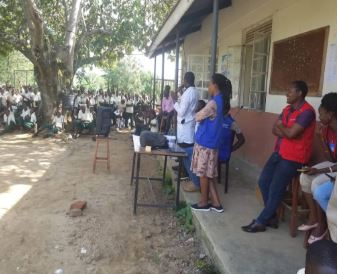

Who We Serve
Local Tailors & Artisans
We provide **affordable, high-quality recycled fibers** to local tailors and artisans, enabling them to create sustainable products while reducing their reliance on imported materials.
Small-Scale Fashion Designers
EcoSpin supports **emerging designers** who are passionate about sustainability, offering them eco-friendly materials to create unique, environmentally conscious fashion.

Community Training Programs
We collaborate with **local schools and youth programs** to teach recycling and textile production, empowering the next generation with skills for a sustainable future.
Waste Collectors & Recyclers
By partnering with **local waste collectors**, we create economic opportunities while addressing plastic pollution in our communities.